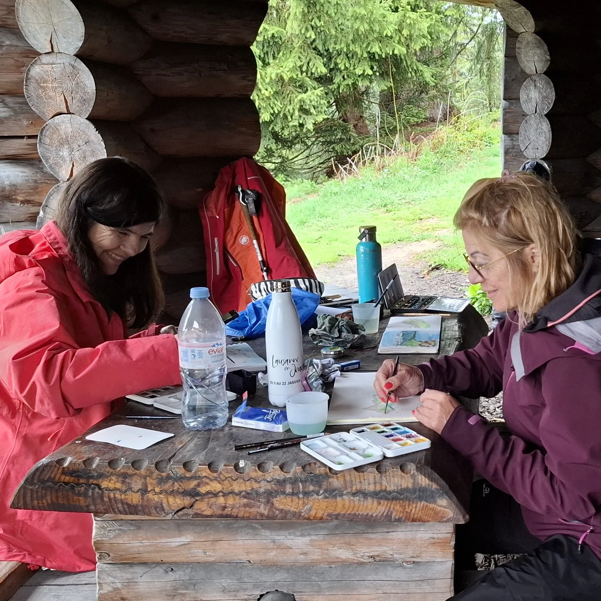
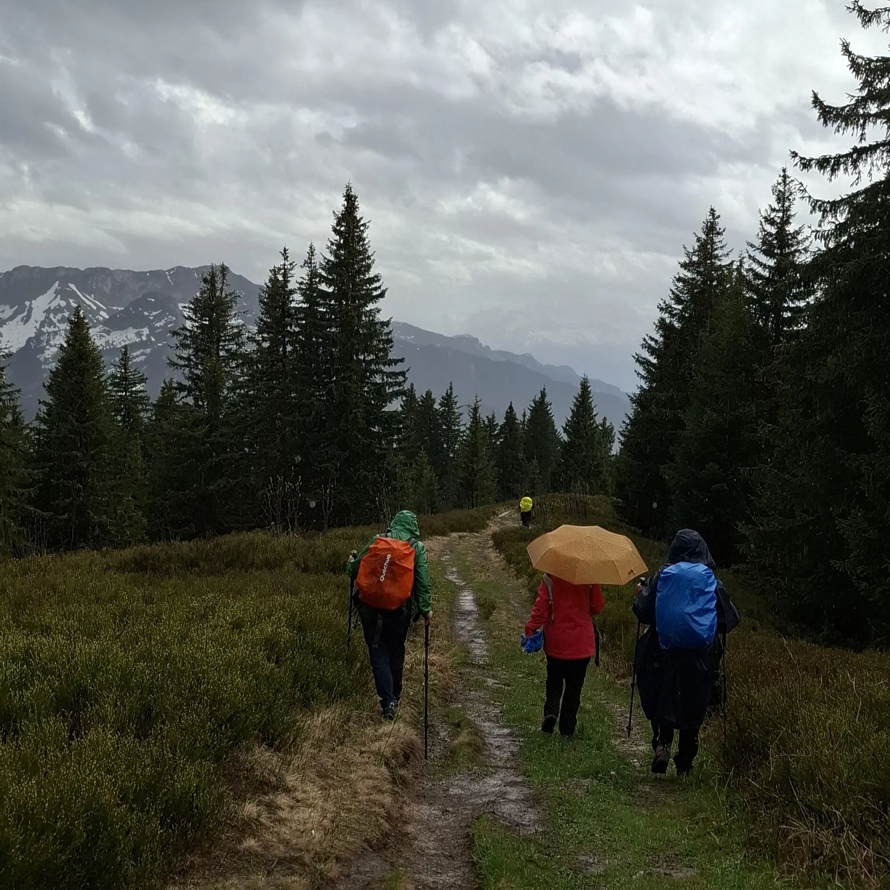
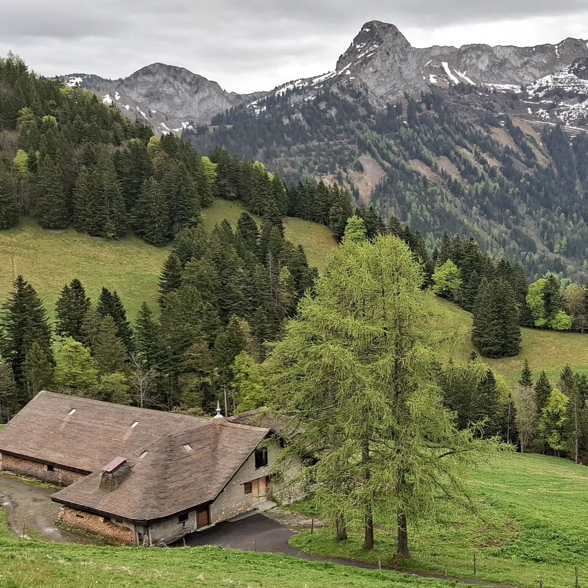
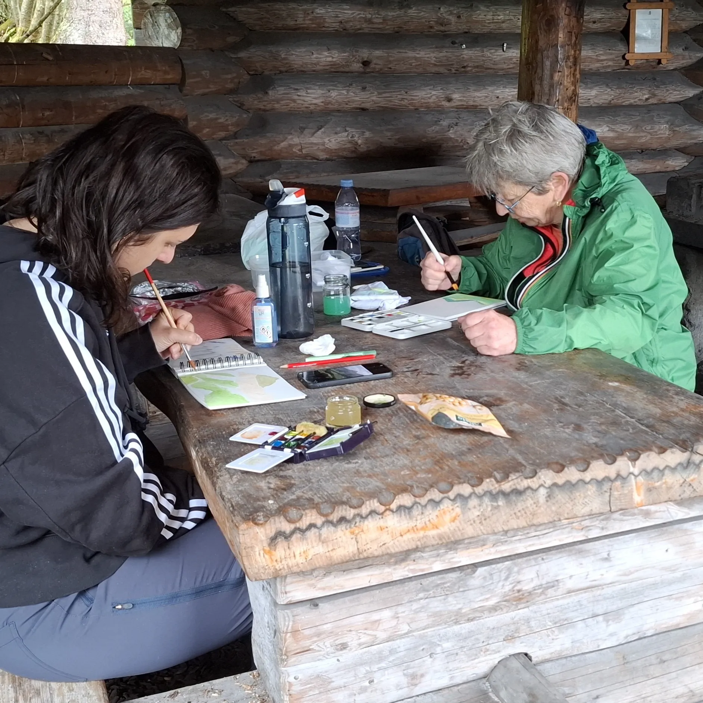
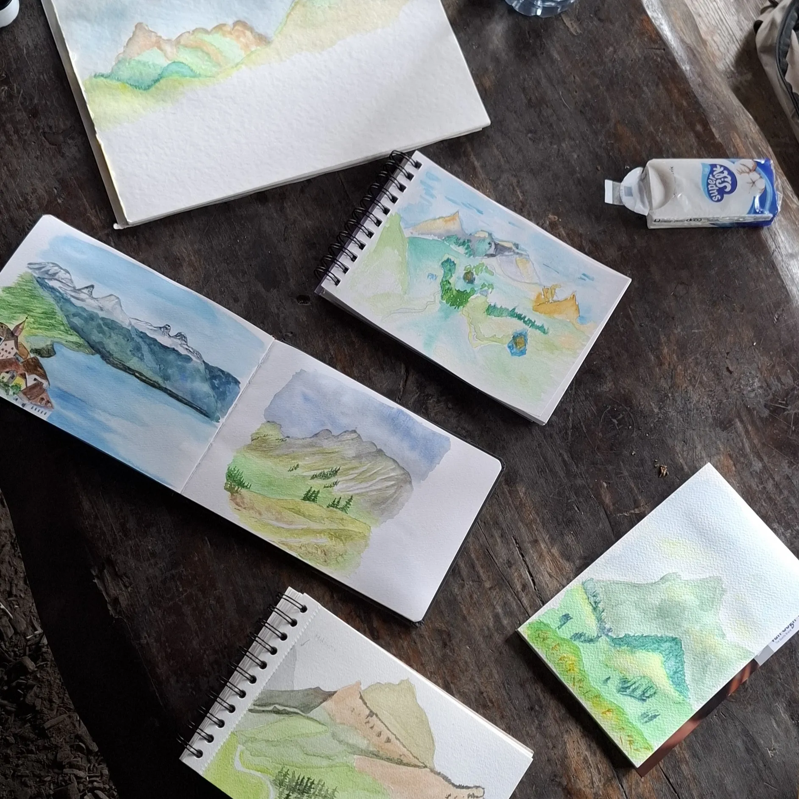
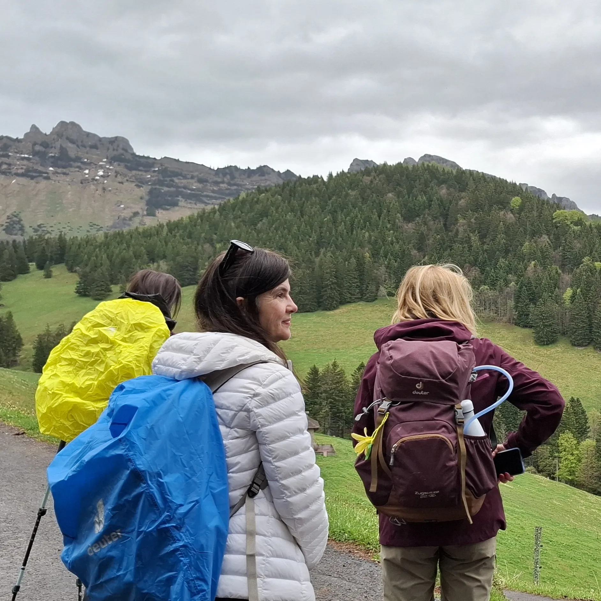

Le printemps pointe le bout de son nez, les fleurs 🌼 sortent mais la météo oscille encore entre beau et mauvais 🌦️, soleil et pluie. C’était complètement à l’image de cette journée sur le Hauts de Montreux. Quelques narcisses se dévoilaient dans les prairies et les oiseaux chantaient. 🕊️
C’est dans ce cadre que s'est déroulée cette journée de randonnée et de peinture. A la suite d’une montée au Col de Soladier, les participantes ont sorti les crayons ✏️ pour croquer les paysage. Faute de pluie, nous avons dû aller à l’abri pour sortir l’aquarelle. 🎨 C’est là que les feuilles blanches ont pu prendre vie et dévoiler un nouvel aspect du paysage découvert auparavant.
Après le pique-nique, nous avons découvert le sommet du Molard et son panorama à 360°. ⛰️ Un point de vue magnifique sur le lac Léman, les Préalpes fribourgeoises, vaudoises et la pleine.
Merci aux participantes d’avoir pris part à cette journée. Elles se sont prises au jeu de l’aquarelle en laissant aller son esprit dans ce qu’on interprète d’un paysage. C’est l’une des facettes incroyables qu’on peut ressentir en peignant en plein air. 💃
Cette randonnée s’est organisée en collaboration avec Passrando que je remercie également.





